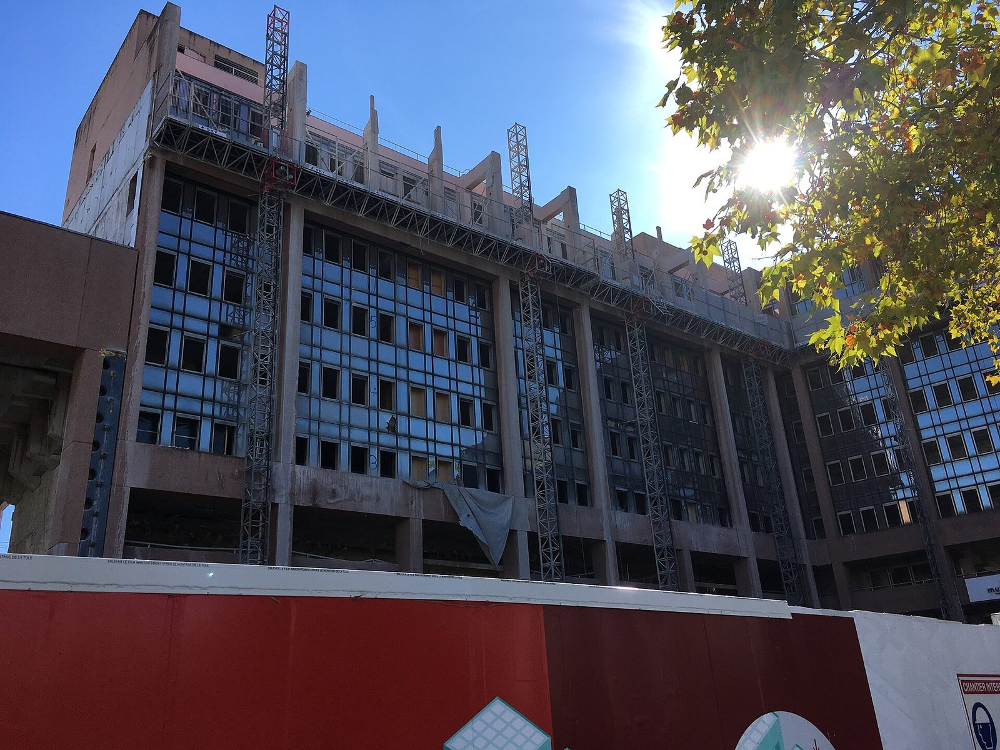

Repérer
Identifier les logements, commerces, bâtiments, terrains et friches susceptibles de faire l'objet d'un projet.
L'agence
Territoires Vivants France agit pour repérer, comprendre et remettre en usage les logements, commerces, bâtiments, friches et terrains vacants.
Portée par une association loi 1901, l'Agence associe propriétaires, collectivités, entreprises, associations et habitants afin de construire des solutions adaptées à chaque bien et à chaque territoire.

Qui sommes-nous ?
Territoires Vivants France développe une mission d'intérêt général autour de la vacance immobilière, de la revitalisation des centres-villes, de la valorisation du patrimoine bâti et de la remise en usage des espaces délaissés.
Notre rôle ne consiste pas uniquement à identifier des biens vacants. Nous cherchons à comprendre leur situation, à mobiliser les bons interlocuteurs et à définir les conditions nécessaires à leur remise en usage.


Notre raison d'être
Un logement fermé, un commerce inoccupé, une friche ou un terrain délaissé peuvent devenir une difficulté pour un propriétaire et pour un territoire.
Chaque bien vacant représente une opportunité de redonner vie à un territoire.
TVF favorise la réutilisation du patrimoine existant et accompagne la création de projets adaptés aux besoins locaux.
Notre mission
Identifier les logements, commerces, bâtiments, terrains et friches susceptibles de faire l'objet d'un projet.
Étudier la situation du bien, son environnement, ses contraintes, son état apparent et les besoins du territoire.
Écouter le propriétaire ou le porteur de projet et l'aider à identifier les solutions envisageables.
Mettre en relation les acteurs utiles : collectivités, professionnels, associations, entreprises et partenaires techniques.
Structurer les étapes du projet et suivre son évolution jusqu'à sa remise en usage lorsque les conditions le permettent.
Notre méthode
Domaines d'intervention
Repérer et accompagner la remise en usage des logements vacants ou dégradés.
En savoir plus
Contribuer à la revitalisation des locaux commerciaux et des centralités.
En savoir plus
Étudier les possibilités de transformation des friches, bâtiments délaissés et terrains inutilisés.
En savoir plus
Favoriser le réemploi des matériaux dans des projets utiles, écologiques et solidaires.
En savoir plus
Soutenir des projets contribuant a l inclusion, a l apprentissage et au cadre de vie.
En savoir plusÀ qui s'adresse l'Agence ?
Étudier les possibilités de valorisation d'un logement, commerce, bâtiment ou terrain vacant.
Mieux comprendre la vacance, identifier des biens et engager une démarche de revitalisation.
Contribuer par expertise, partenariat ou matériaux réemployables.
Rechercher un espace, un accompagnement ou des partenaires.
Signaler un bien vacant ou participer à l'amélioration du quartier.
Territoire pilote
Territoires Vivants France développe son premier dispositif opérationnel à Saint-Étienne. Ce territoire pilote doit permettre de structurer progressivement le repérage des biens vacants, la prise de contact avec les propriétaires, la constitution des dossiers, les partenariats locaux et les outils de suivi de TVF.
Les enseignements issus de ce territoire pourront ensuite servir au déploiement de l'approche TVF dans d'autres territoires.
Voir le territoire piloteNos engagements
Le propriétaire conserve ses droits et ses décisions.
Aucune aide, financement ou rénovation n'est présenté comme automatique.
Les informations transmises sont traitées dans un cadre de dossier.
Les opérations réglementées sont orientées vers les acteurs habilités.
Une approche différente
TVF ne considère pas un bien vacant de manière isolée. Nous étudions aussi son implantation, les besoins locaux, l'activité économique, l'accessibilité, les partenariats possibles et l'impact potentiel de sa remise en activité.
Cette approche territoriale permet de rechercher une solution cohérente pour le propriétaire, le bien et son environnement.
Construisons ensemble
Vous êtes propriétaire, collectivité, entreprise, association ou habitant ? TVF peut étudier votre demande et vous orienter vers le parcours adapté.